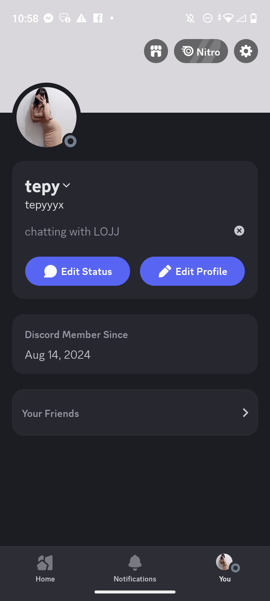

our story.

hii babyyy,
first of all merry christmas to my prettiest cutest baby in my life ✨🎄 i hope this christmas will bring u much much joy and happiness!. im really grateful to end this year with u even tho i didnt start with u. ure my best gift this year :). here i want to write our stories that we made
CHAPTER 1
FIRST DAY MEETING EACH OTHER
our meeting was actually so cute bc i was just trolling around in that game, i didnt even talk that time but u. its such a miracle bc u didnt skip me na 😭😭 people hate when someone doesnt talk yk. i love ur cute voice and the way u speak to ur mom there, like god ure so cute ngl. after the game we added and tried to be mutuals on IG but ur ig was broken. we moved to roblox message that argghh it always censored our text but finally u can find me on dc huhu so cuteee.

we started our chat there, u were so excited and so do i. then we agreed do a face reveal hahaha. i love the way u compliment me, i felt so welcomed that time. then u started to share ur pic for the first time, i already knew that u are cute and it was just how i expected. i still remember when ure excited or nervous u started to speak tagalog and it was hella hella cute. after that u started to spoil me pics hahaha that was the best and u dont know how big my smile was. u put a status that says "chatting with LOJJ" and ask me to see ur profile. 
we talk for hours and hours, till dawn i remember. u said u were not even sleepy bc u had sm fun w me but we had to sleep bc u had orientation the next day and we slept at 2.20 am PH time. i cant forget that precious moment i even still remember every details.
CHAPTER 2
FIRST MONTH TOGETHER WITH U
our first month was going well like we talk everyday and a lot, u started to tell me about ur life and friends. u ask me hows my life too and all that. i still remember the first month i wake up so happy bc i knew that i will start my day and will talk w u. u really brought me to life after all what happened before u entered my life. and we get to know abt each other past. i told u what happened to my love life and u told me abt ur ex and u been single since then. but u were just like me that has crushes to talk to before. when i met u i was not with someone. u gave me sweet words everyday and made me feel special.
i started to feel weird and confused abt myself, i keep questioning what was that feeling in me that time. i told u about that, and u listened to me. u said to me u used to have crushes back then but, with me u were different bc u like me and u treat me differently. and i started to think that maybe i actually like u and that was true. u told me that u like me but only just 20% but u do like me. the reason why i question myself bc im scared of falling in love w someone online again bc they always dumped me when i love them the most. but after hearing that u like me, i started to open my heart again to fall in love. and i fell so hard HAHAHAHAHAHA 😭.

oh yea this moment when u were at the resort, i still remember i waited for u to reply bc i was tired bc of the gym. but later at night u reply to me and tell me u still at the resort. u told me a chika that u said to papa that u met a pogi guy but papa was right. he said "doesnt mean that his handsome, your life will be better". and then u said "papa there is no label yet so its just chat"

the moment that u said to me ur little sister (bebe) wanted to talk w me and u made a groupchat w me and bebe. i was shocked like why would bebe wanted to talk w me or know me. and we talked there, bebe said that my face looked just like filipino HAHAHAHAHAH. we sent random meme pics and bebe started to teased us. that was so cute waaaa. im actually happy bc ur sis actually knows me huhu.
CHAPTER 3
US THIS FAR
okay this is gonna be the last and the longest chapter ig hehe 😭😭. i can tell every moment was not just abt happiness, and its also abt the ups and downs of us. we sometimes argue and actually most of the time i just wanted to be comforted and get reassurance 🙁. it was hard for us bc we have attitude but we here we are! we made it this far and im proud of us. thank u for staying w me. even tho i still sometimes being the main problem bc of my overthinking and trust issues. once again it doesnt mean that i dont trust u tho its just something that i cant really control and i hope u understand and bare w me always like i always said to u 🥺. i hate myself for being a heavy overthinker. slightly different behavior can trigger me being ovt. i just wanted to mention that bc that was our hard time but once again we made it this far baby.
we bond and play a lot even tho these days ure busy w university, assignments or even chores sometimes HAHAHAHAH. here are pics that i took 😊


we play 2 players game and ive never done it w someone and finally i have someone to play w huhu 😭. im so happy w u. i hope u know how much u mean to me 🥺. idk man damn

we play scribble.io and guessing the drawings we made, and ur drawings are hella good! ure so talented baby argh im so proud and in love hehe.

i remember we were playing this spider obby w bebe too. u kept on dying na HAHAHAHAHA CUTE but i waited for u till u made it. it was hard for u bc ure playing on mobile mwehehe

LOOK HOW PRETTY WE WERE HAHAHAHAHA I EVEN PROUD OF MYSELF 😲😲😲.


THIS IS SO CUTE NA OMG WE WERE ON PHOTOBOOTH OGMGMGMGMG IWABYUUAJDSJJDASJAJDS I WISH THAT WE CAN DO IT IN PERSON ARGH. 😭

im so thankful that u were here bc u helped me w these stuff bc im not that good but my baby was willing to help awww... 🥺 sorry for disturbing when u were helping me HAHHAAHAHAHA.

AHAHHAHAHAHAH I STILL REMEMBER I ASKED FOR SMTH ELSE BUT U SAID U WILL MAKE ME HAPPY IN OTHER WAYS SO U ASKED ME IF I WANT U TO DRAW ME HAHAHA CUTE. BUT I SAID DRAW US INSTEAD. but fr this is sooooooooooooooooooooo good and meaningful for me.


these 2 pics are my most fav pics among the 250++++ pics HHAAHHHAHAAH but i love the rest pics too tho ofc babyyy. look how beautiful my baby is!

in this moment that i got caught texting w u by my friend na argh idk how he took pic i was even hiding when texting u huhu

this is why i always want to call w u, i can be myself w u and u literally my day maker. iwabyuuuu
i think this is too long and idk if u would read all this stuff waaaaa
u probably remember that time on the call i mentioned that i wanted to ask something on christmas but i refused to let u know bc i had to think abt it naa. now i want to tell u this bc its a beautiful day :).
Steffany, i love u so much. and i dont want anybody else for me, i really want u my baby. im willing to wait for the time till we see each other in person rather than be with someone else. i imagine my future with u and im really sure about u. im never been this sure with someone before i could tell. i understand that u dont want to be in a relationship yet and u told me when the first time we met, and also bc u cant give and balance time with me. and i dont mind it as long as im w u and u are not gonna leave me. u can still make time for me after ur busy time tho i really appreciate it. u said to me that ure afraid of making me feel sad bc of ur absence and everything.
those arent a problem for me but for me personally, the main problem is without an official label, i dont have rights to do anything since im not ur bf and possibly could lose u anytime. but i dont want to lose u at all argh. i just want to feel safe with label so that i will not think i will be replaced or u will find someone better, even tho yeah u said to me u wont find someone better cus i am enough for u. i hope u understand what i meant babyy
so on this special day and special date, there is one thing i want to ask u...
Do you want to be my girlfriend, my other half, my world, my everything baby? 🥺
(screenshot this and inform me with ur response 😊)
(PS. the reason i pick this day bc its Jesus's born day)
(PS. pwese say yes HAHAHHHDHHSAHSADHDH)